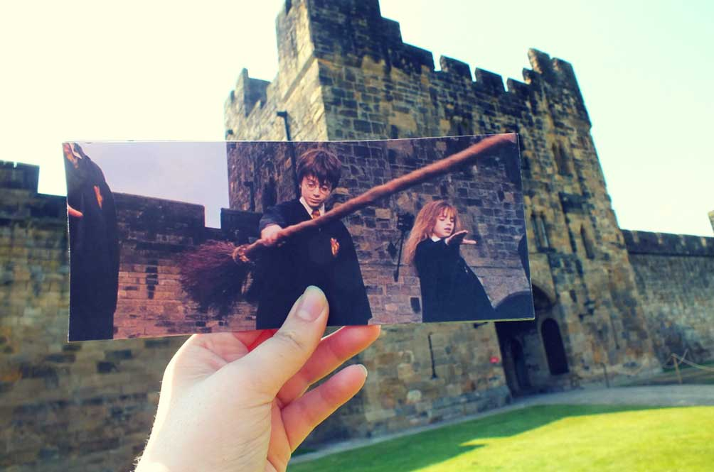
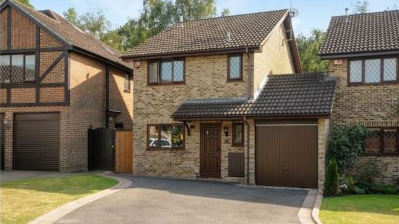
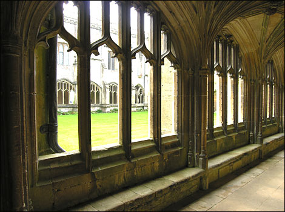
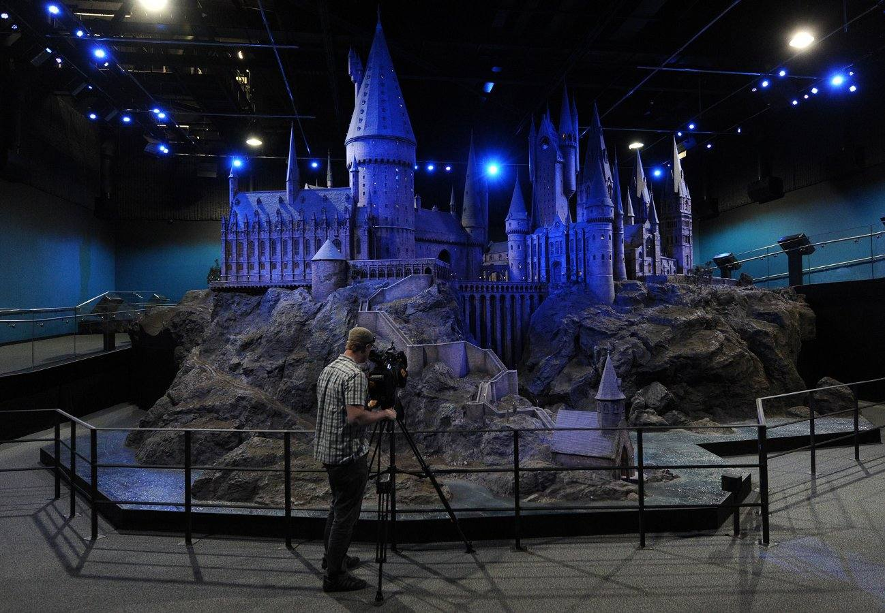

LA SAGA HARRY POTTER:
Harry Potter no es solo la historia de un niño mago. Es la historia de
alguien que crece marcado por la pérdida, el dolor, y una
responsabilidad que no pidió, pero que enfrenta con una valentía enorme.
Desde que entra a Hogwarts a los 11 años, Harry comienza un viaje que va
mucho más allá de aprender hechizos. Es un camino de descubrimiento
personal, de enfrentarse a sus miedos
de entender el amor, la muerte y el poder, y de encontrar una familia en
sus amigos. Cada película representa una etapa distinta de ese
crecimiento
Libros
La saga fue escrita por J.K. Rowling, una autora británica que,
literalmente, cambió el mundo de la literatura juvenil con esta
historia.
Comenzó escribiendo en cafés, mientras pasaba por momentos muy
difíciles, y terminó creando un universo que marcó a generaciones.
La saga de Harry Potter tuvo un impacto profundo y duradero en el
cine, no solo por su éxito comercial, sino también por la manera en
que influyó en la forma
en que se hacen las películas basadas en libros,la industria de los
efectos visuales, el desarrollo de franquicias, y la evolución del
cine de fantasía y aventuras.
Los libros de J.K. Rowling crearon un universo tan detallado y
complejo que adaptarlos al cine fue un desafío monumental.
¿Qué tienen de especial los libros?
- Son más profundos que las películas. Te muestran lo que los personajes piensan, sienten y ocultan.
- Hay más detalles, personajes y momentos que no entraron en las pelis (ej: Peeves, Winky, la historia completa de los Merodeadores...).
- Tienen una escritura que crece con el lector: el primero es más liviano, y el séptimo es una obra cargada de dolor, amor y decisiones adultas.
Lo especial de los libros de Harry Potter es su universo mágico
detallado, que combina fantasía con temas universales como la amistad,
el sacrificio y la lucha entre el bien y el mal.
Los personajes son complejos y evolucionan a lo largo de la saga, lo
que permite que tanto niños como adultos se conecten con la historia.
Además, la trama está llena de giros sorprendentes y una profunda
carga emocional, lo que hace que los libros no solo sean una aventura
mágica.
La saga original está formada por siete libros publicados entre 1997 y
2007, los libros se convirtieron rápidamente en un fenómeno literario
mundial, traducidos a más de 80 idiomas
y con más de 500 millones de copias vendidas, convirtiéndose en una de
las series más leídas de la historia .
Impacto en el cine
La saga de Harry Potter tuvo un gran impacto en el cine, convirtiéndose
en una de las franquicias más exitosas de todos los tiempos
recaudó más de 7,723 millones de dólares en todo el mundo la ultima
pelicula recaudo con una recaudación de aproximadamente 1.342 millones
de dólares.
Esto marcó un antes y un después en la industria del cine. Basada en los
libros de J.K. Rowling, la serie no solo fue un fenómeno comercial, sino
que también transformó la forma en que se producen, promocionan y
consumen las películas de fantasía.
Locaciones de Harry Potter

El mundo de Harry Potter está ambientado principalmente en el Reino
Unido, y aunque muchos de los lugares son ficticios, están inspirados en
locaciones reales británicas o directamente grabados en ellas.
La mayoría de las escenas fueron filmadas en los estudios de la Warner
Bros, lugar que se ha convertido en peregrinaje para todos aquellos
amantes de la mágica saga.
Estas son las locaciones principales del rodaje de la Saga de Harry Potter.
La casa de los Dursley
La ubicación real se encuentra en 12 de la calle Picket Post Close en la ciudad de Bracknell, 50 kilómetros al oeste de Londres. En un principio Warner Bros tuvo que pagar a los residentes de Picket Post Close una gran tarifa por usar el vecindario.
Catedral de Durham
Se encuentra en la ciudad de Durham, al norte de Inglaterra. Muchos de los pasillos y aulas de la escuela de magos fueron filmados en la catedral de Durham.
Alnwick Castle

El Castillo de Alnwick se encuentra en la región de Northumberland, al norte de Inglaterra. Se convertiría en el colegio Hogwarts en las dos primeras películas de Harry Potter en clases de vuelo en escoba con la profesora Hooch.
Set de grabacion
Las películas de Harry Potter se grabaron principalmente en los estudios Warner Bros. de Leavesden, donde se construyeron sets reales como el Gran Comedor, el despacho de Dumbledore y el Banco Gringotts. Para mostrar el exterior de Hogwarts, se creó una maqueta en miniatura con un altísimo nivel de detalle. Esta maqueta fue usada en todas las películas antes de que se usaran efectos digitales, y hoy puede visitarse en el tour oficial de los estudios en Londres.
